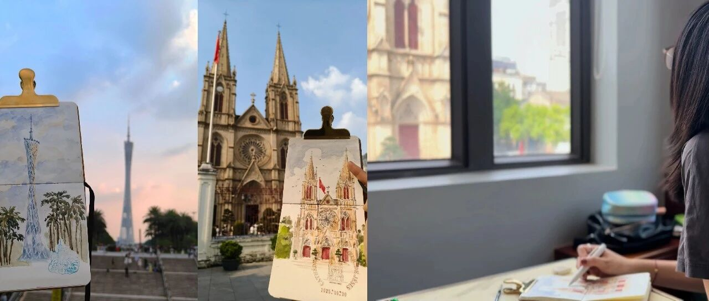

2025国庆旅行写生—广州篇


在咖啡馆碰到把位置让给我的阿姨，阿姨在上摄影课，她说看我画画觉得这个场景很有生命力，就帮我拍了视频。后来还把她的摄影成品分享给我，很喜欢她镜头下的大教堂和画画的自己～感谢奇妙的缘分～

写生带给我太多惊喜，不论以后绘画是不是ai的天下，画画的过程都充满惊喜，可以用画笔来记录和表达也是一种幸福。
好啦，今天先到这，国庆游记下篇也会离开广州～敬请期待哟～

在咖啡馆碰到把位置让给我的阿姨，阿姨在上摄影课，她说看我画画觉得这个场景很有生命力，就帮我拍了视频。后来还把她的摄影成品分享给我，很喜欢她镜头下的大教堂和画画的自己～感谢奇妙的缘分～
写生带给我太多惊喜，不论以后绘画是不是ai的天下，画画的过程都充满惊喜，可以用画笔来记录和表达也是一种幸福。
好啦，今天先到这，国庆游记下篇也会离开广州～敬请期待哟～